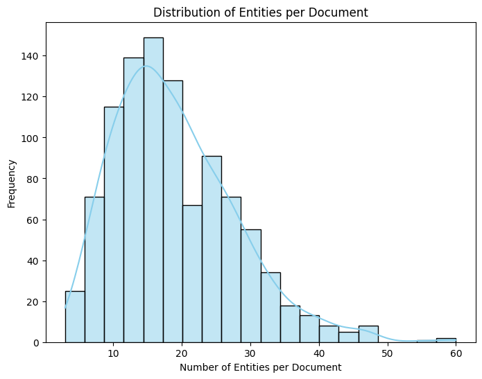
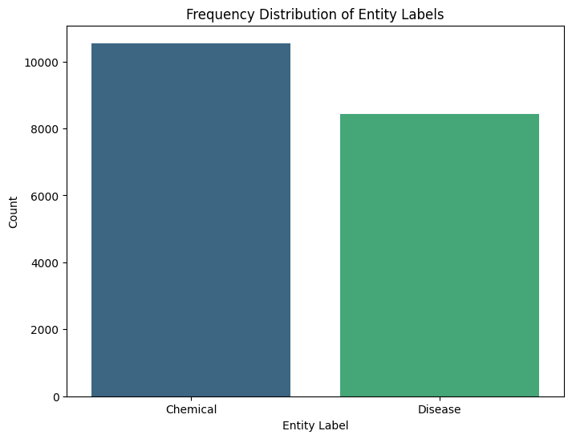

Code
# !pip install -U spacyimport spacy
from spacy.matcher import Matcher
from spacy.training import Example
import random
import warnings
import spacy.util
from sklearn.metrics import precision_recall_fscore_support
import matplotlib.pyplot as plt
import numpy as np
import seaborn as sns
from collections import Counter
# load blank spacy model
nlp = spacy.blank("en")
warnings.filterwarnings('ignore')def parse_data(file_path, remove_gold=False):
"""
Parses a PubTator file to extract the combined text (title + abstract)
Optionally, the entity annotations.
Args:
file_path (str): Path to the PubTator file.
remove_gold (bool): If True, ignore entity annotations
If False, keep entity annotations
Returns:
list: A list of dictionaries, each containing:
-> "text": The combined document text.
-> "entities": A list of tuples (start, end, label)
if remove_gold is False, otherwise an empty list.
"""
with open(file_path, 'r', encoding='utf-8') as f:
data = f.read()
docs = []
current = {"text": "", "entities": []}
for line in data.split("\n"):
if line.startswith("#####"):
continue
if "|t|" in line:
# Title
current["text"] = line.split("|t|")[-1].strip()
elif "|a|" in line:
# Append Abstract
current["text"] += " " + line.split("|a|")[-1].strip()
elif "\t" in line and not remove_gold:
# Parse annotations only for Test set.
parts = line.split("\t")
if len(parts) >= 5:
try:
start, end, label = int(parts[1]), int(parts[2]), parts[4]
except ValueError:
continue
current["entities"].append((start, end, label))
elif line.strip() == "" and current["text"]:
# End of a document; add it to our list.
docs.append(current)
current = {"text": "", "entities": []}
if current["text"]:
docs.append(current)
return docs
train_path = "CDR_TrainingSet.PubTator.txt"
dev_path = "CDR_DevelopmentSet.PubTator.txt"
test_path = "CDR_TestSet.PubTator.txt"
# Parse the files:
train = parse_data(train_path, remove_gold=True)
dev = parse_data(dev_path, remove_gold=True)
test = parse_data(test_path, remove_gold=False)
train_dev = train + devCombined Train+Dev Sample:
{'text': 'Naloxone reverses the antihypertensive effect of clonidine. In unanesthetized, spontaneously hypertensive rats the decrease in blood pressure and heart rate produced by intravenous clonidine, 5 to 20 micrograms/kg, was inhibited or reversed by nalozone, 0.2 to 2 mg/kg. The hypotensive effect of 100 mg/kg alpha-methyldopa was also partially reversed by naloxone. Naloxone alone did not affect either blood pressure or heart rate. In brain membranes from spontaneously hypertensive rats clonidine, 10(-8) to 10(-5) M, did not influence stereoselective binding of [3H]-naloxone (8 nM), and naloxone, 10(-8) to 10(-4) M, did not influence clonidine-suppressible binding of [3H]-dihydroergocryptine (1 nM). These findings indicate that in spontaneously hypertensive rats the effects of central alpha-adrenoceptor stimulation involve activation of opiate receptors. As naloxone and clonidine do not appear to interact with the same receptor site, the observed functional antagonism suggests the release of an endogenous opiate by clonidine or alpha-methyldopa and the possible role of the opiate in the central control of sympathetic tone.', 'entities': []}
========================================
Test Set Sample (with gold annotations):
{'text': 'Famotidine-associated delirium. A series of six cases. Famotidine is a histamine H2-receptor antagonist used in inpatient settings for prevention of stress ulcers and is showing increasing popularity because of its low cost. Although all of the currently available H2-receptor antagonists have shown the propensity to cause delirium, only two previously reported cases have been associated with famotidine. The authors report on six cases of famotidine-associated delirium in hospitalized patients who cleared completely upon removal of famotidine. The pharmacokinetics of famotidine are reviewed, with no change in its metabolism in the elderly population seen. The implications of using famotidine in elderly persons are discussed.', 'entities': [(0, 10, 'Chemical'), (22, 30, 'Disease'), (55, 65, 'Chemical'), (156, 162, 'Disease'), (324, 332, 'Disease'), (395, 405, 'Chemical'), (442, 452, 'Chemical'), (464, 472, 'Disease'), (537, 547, 'Chemical'), (573, 583, 'Chemical'), (689, 699, 'Chemical')]}for Train + Dev sets
train_eda = parse_data(train_path, remove_gold=False)
dev_eda = parse_data(dev_path, remove_gold=False)
combined_eda_set = train_eda + dev_eda
num_docs = len(combined_eda_set)
print("Total number of documents:", num_docs)
# Number of characters per document
doc_lengths = [len(doc["text"]) for doc in combined_eda_set]
avg_length = sum(doc_lengths) / num_docs
print("Average document length (characters):", round(avg_length, 2))
# unique labels and their counts
label_counter = Counter(entity[2] for doc in combined_eda_set for entity in doc["entities"])
print("Unique Entity Labels and Their Counts:")
for label, count in label_counter.items():
print(f"{label}: {count}")
# Number of entities per document
num_entities = [len(doc["entities"]) for doc in combined_eda_set]
avg_entities = sum(num_entities) / num_docs
print("Average number of entities per document:", round(avg_entities, 2))Total number of documents: 1000
Average document length (characters): 1299.7
Unique Entity Labels and Their Counts:
Chemical: 10550
Disease: 8426
Average number of entities per document: 18.98# Distribution of entities per document
plt.figure(figsize=(8, 6))
sns.histplot(num_entities, bins=20, kde=True, color="skyblue")
plt.xlabel("Number of Entities per Document")
plt.ylabel("Frequency")
plt.title("Distribution of Entities per Document")
plt.show()
# Bar chart for entity label frequencies
label_counts = {}
for doc in combined_eda_set:
for ent in doc["entities"]:
label = ent[2]
label_counts[label] = label_counts.get(label, 0) + 1
labels = list(label_counts.keys())
counts = list(label_counts.values())
plt.figure(figsize=(8, 6))
sns.barplot(x=labels, y=counts, palette="viridis")
plt.xlabel("Entity Label")
plt.ylabel("Count")
plt.title("Frequency Distribution of Entity Labels")
plt.show()

matcher = Matcher(nlp.vocab)
chem_patterns = [
[{"LOWER": {"REGEX": "^[a-z0-9-]+(ol|ine|ide|one|ate|amine|azole|vir|dopa|mab|statin|pril|sartan|rin)$"}}],
[{"LOWER": {"REGEX": "^(?:cyclo|benz|ethyl|methyl|hydro)[a-z0-9-]*$"}}],
[{"LOWER": {"IN": ["insulin", "penicillin"]}}],
[
{"LOWER": {"REGEX": "^[a-z0-9-]+$"}, "OP": "+"},
{"LOWER": "acid"}
],
[
{"LOWER": {"REGEX": "^[a-z0-9-]+$"}},
{"LOWER": {"REGEX": "^(chloride|sulfate|sulphate|oxide|nitrate)$"}}
],
[
{"LOWER": {"REGEX": "^[a-z0-9-]+$"}, "OP": "+"},
{"LOWER": {"REGEX": "^(inhibitor|inhibitors|blocker|blockers|antagonist|agonist)$"}}
]
]
disease_patterns = [
[{"LOWER": {"REGEX": "^[a-z]+(itis|osis|emia|pathy|oma|algia|penia|dystrophy|sclerosis|necrosis|lepsy)$"}}],
[{"LOWER": {"IN": [
"hypertensive", "hypotensive", "cancer", "tumor", "tumour",
"diabetes", "malaria", "syndrome", "delirium", "migraine"
]}}],
[{"TEXT": {"REGEX": ".*opathy$"}}],
[
{"LOWER": {"REGEX": "^[a-z]+$"}, "OP": "+"},
{"LOWER": {"REGEX": "^(disease|syndrome|cancer|tumor|tumour)$"}}
],
[
{"LOWER": {"REGEX": "^[a-z]+$"}},
{"LOWER": "'s", "OP": "?"},
{"LOWER": {"REGEX": "^(disease|syndrome)$"}}
],
[{"TEXT": {"REGEX": "^cardiac$"}}, {"TEXT": {"REGEX": "^(arrest|asystole)$"}}],
[{"TEXT": {"REGEX": "^heart$"}}, {"TEXT": {"REGEX": "^attack$"}}],
[{"TEXT": {"REGEX": "^myocardial$"}}, {"TEXT": {"REGEX": "^infarction$"}}],
[{"LOWER": {"IN": [
"dystonia", "dyskinesia", "neuropathy", "fasciculation", "fasciculations",
"hypertension", "myocardial infarction", "chronic renal failure", "crohn's disease",
"infection", "fever", "headache", "inflammation", "stroke", "sepsis", "anemia"
]}}],
[
{"LOWER": {"REGEX": "^(acute|chronic|severe|idiopathic)$"}, "OP": "?"},
{"LOWER": {"IN": ["renal", "cardiac", "pulmonary", "neuromuscular", "auditory", "visual"]}, "OP": "?"},
{"LOWER": {"IN": ["failure", "injury", "deficiency", "dysfunction", "toxicity", "hypertension", "hypotension", "dystonia", "dyskinesia", "disorder"]}}
],
[{"LOWER": {"REGEX": "^(neuro|cardio|hepato|nephro|pneumo|encephal)[a-z]+$"}}],
]
matcher.add("DISEASE", disease_patterns)
matcher.add("CHEMICAL", chem_patterns)
def annotate_docs_with_rules(docs):
"""
Applies our rule-based matcher to each document to generate weak labels
Args:
docs (list): List of document dictionaries
Returns:
list: List of document dictionaries with an added key [auto_entities]
with a list of weak entity annotations as tuples (start, end, label).
"""
annotated_docs = []
for doc in docs:
text = doc["text"]
spacy_doc = nlp(text)
matches = matcher(spacy_doc)
auto_entities = []
for match_id, start, end in matches:
span = spacy_doc[start:end]
label = nlp.vocab.strings[match_id].title()
auto_entities.append((span.start_char, span.end_char, label))
new_doc = doc.copy()
new_doc["auto_entities"] = auto_entities
annotated_docs.append(new_doc)
return annotated_docs
# We use a subset of the total data
seed_size = int(0.7 * len(train_dev))
seed_docs = train_dev[:seed_size]
# Apply the rule-based matcher
annotated_seed_docs = annotate_docs_with_rules(seed_docs)# Test print: print sample annotated documents.
print("\nSample Annotated Documents from Seed Set:")
num_samples = min(2, len(annotated_seed_docs))
for i in range(num_samples):
sample = annotated_seed_docs[i]
print("=" * 40)
print(f"Document {i+1}:")
print("Text:", sample["text"])
print("Auto Entities:", sample.get("auto_entities", []))
Sample Annotated Documents from Seed Set:
========================================
Document 1:
Text: Naloxone reverses the antihypertensive effect of clonidine. In unanesthetized, spontaneously hypertensive rats the decrease in blood pressure and heart rate produced by intravenous clonidine, 5 to 20 micrograms/kg, was inhibited or reversed by nalozone, 0.2 to 2 mg/kg. The hypotensive effect of 100 mg/kg alpha-methyldopa was also partially reversed by naloxone. Naloxone alone did not affect either blood pressure or heart rate. In brain membranes from spontaneously hypertensive rats clonidine, 10(-8) to 10(-5) M, did not influence stereoselective binding of [3H]-naloxone (8 nM), and naloxone, 10(-8) to 10(-4) M, did not influence clonidine-suppressible binding of [3H]-dihydroergocryptine (1 nM). These findings indicate that in spontaneously hypertensive rats the effects of central alpha-adrenoceptor stimulation involve activation of opiate receptors. As naloxone and clonidine do not appear to interact with the same receptor site, the observed functional antagonism suggests the release of an endogenous opiate by clonidine or alpha-methyldopa and the possible role of the opiate in the central control of sympathetic tone.
Auto Entities: [(0, 8, 'Chemical'), (49, 58, 'Chemical'), (93, 105, 'Disease'), (152, 156, 'Chemical'), (181, 190, 'Chemical'), (244, 252, 'Chemical'), (274, 285, 'Disease'), (312, 322, 'Chemical'), (354, 362, 'Chemical'), (364, 372, 'Chemical'), (373, 378, 'Chemical'), (425, 429, 'Chemical'), (469, 481, 'Disease'), (487, 496, 'Chemical'), (589, 597, 'Chemical'), (637, 646, 'Chemical'), (719, 727, 'Chemical'), (750, 762, 'Disease'), (844, 850, 'Chemical'), (865, 873, 'Chemical'), (878, 887, 'Chemical'), (1016, 1022, 'Chemical'), (1026, 1035, 'Chemical'), (1045, 1055, 'Chemical'), (1085, 1091, 'Chemical'), (1107, 1114, 'Chemical'), (1130, 1134, 'Chemical')]
========================================
Document 2:
Text: Lidocaine-induced cardiac asystole. Intravenous administration of a single 50-mg bolus of lidocaine in a 67-year-old man resulted in profound depression of the activity of the sinoatrial and atrioventricular nodal pacemakers. The patient had no apparent associated conditions which might have predisposed him to the development of bradyarrhythmias; and, thus, this probably represented a true idiosyncrasy to lidocaine.
Auto Entities: [(0, 9, 'Chemical'), (18, 34, 'Disease'), (90, 99, 'Chemical'), (409, 418, 'Chemical')]def train_ner_model(model, data, n_iter):
"""
Trains a blank NER model using spaCy with the given data.
Args:
model: The blank spaCy model.
data: List of training examples (dictionaries with "text" and "auto_entities").
n_iter: Number of training iterations/Epochs.
Returns:
None
"""
# Add NER component if not present.
if "ner" not in model.pipe_names:
ner = model.add_pipe("ner", last=True)
else:
ner = model.get_pipe("ner")
# Add weak labels from the training data.
for doc_data in data:
ents = doc_data.get("auto_entities", [])
for ent in ents:
label = ent[2]
try:
ner.add_label(label)
except Exception:
pass
# Prepare training examples.
training_examples = []
for doc_data in data:
text = doc_data["text"]
raw_ents = doc_data.get("auto_entities", [])
doc = model.make_doc(text)
spans = []
# Convert entities to Span objects.
for ent in raw_ents:
span = doc.char_span(ent[0], ent[1], label=ent[2])
if span is not None:
spans.append(span)
#remove overlapping spans.
filtered_spans = spacy.util.filter_spans(spans)
# Convert filtered spans back to the (start, end, label) format.
annotations = {"entities": [(span.start_char, span.end_char, span.label_) for span in filtered_spans]}
# Only add example if there's at least one entity.
if annotations["entities"]:
example = Example.from_dict(doc, annotations)
training_examples.append(example)
# Initialize optimizer.
optimizer = model.begin_training()
for itn in range(n_iter):
random.shuffle(training_examples)
losses = {}
batches = spacy.util.minibatch(training_examples, size=16)
for batch in batches:
model.update(batch, drop=0.2, sgd=optimizer, losses=losses)
print(f"Iteration {itn+1}: Loss = {losses.get('ner', 0):.4f}")
print("\n==Model Training Completed==")def uncertainty_sampling(model, docs, n_samples, length_constant=200):
"""
Selects n_samples documents based on model uncertainty.
Args:
model: The spaCy model.
docs: List of document dictionaries (each with a 'text' key).
n_samples: Number of documents to select.
length_constant: Constant to scale uncertainty based on document length.
Returns:
List of document texts with the highest uncertainty.
"""
scores = []
for doc in docs:
text = doc["text"]
spacy_doc = model(text)
confidences = [ent._.confidence for ent in spacy_doc.ents
if hasattr(ent._, "confidence")]
if confidences:
uncertainty = 1 - max(confidences)
else:
uncertainty = len(text) / (len(text) + length_constant)
scores.append(uncertainty)
indices = np.argsort(scores)[-n_samples:]
return [docs[i]["text"] for i in indices]
def manual_annotation(text):
"""
Simulates manual annotation by reapplying the rule-based matcher.
Args:
text: The input text.
Returns:
list: List of dictionaries with "start", "end", "label".
"""
doc = nlp(text)
matches = matcher(doc)
ann = []
for match_id, start, end in matches:
span = doc[start:end]
label = nlp.vocab.strings[match_id].title()
ann.append({"start": span.start_char, "end": span.end_char, "label": label})
return ann
def active_learning_loop(model, labeled_data, full_data, iterations=3, n_samples=5):
"""
Simple active learning loop to iteratively update the labeled dataset
and retrain the model.
Args:
model: The spaCy model.
labeled_data: The initial labeled set
full_data: The complete set of documents
optimizer: The optimizer.
iterations: Number of active learning iterations.
n_samples: Number of uncertain samples to select per iteration.
Returns:
None
"""
for i in range(iterations):
print(f"\n=== Active Learning Iteration {i+1} ===")
# Exclude documents already in labeled_data.
already_labeled = {doc["text"] for doc in labeled_data}
candidates = [doc for doc in full_data if doc["text"] not in already_labeled]
# Use uncertainty sampling on remaining candidates.
# selected_texts = uncertainty_sampling(model, candidates, n_samples)
selected_texts = uncertainty_sampling(model, candidates, n_samples)
print("Selected uncertain samples for annotation:")
for text in selected_texts:
print(" -", text[:100] + "...")
# manual annotation on selected samples.
new_annotations = []
for doc in candidates:
if doc["text"] in selected_texts:
anns = manual_annotation(doc["text"])
new_annotations.append({
"text": doc["text"],
"entities": [(ann["start"], ann["end"], ann["label"]) for ann in anns]
})
# Add the newly annotated examples to the labeled set.
labeled_data.extend(new_annotations)
print(f"New annotations added. Total labeled data size: {len(labeled_data)}")
# Retrain the model on the updated labeled set.
train_ner_model(model, labeled_data, n_iter=10)
model.to_disk(f"model_iter_{i+1}")
print(f"\nFinished Active Learning Iteration {i+1}")
print("\nActive Learning Loop Completed")
=== Active Learning Iteration 1 ===
Selected uncertain samples for annotation:
- Association of nitric oxide production and apoptosis in a model of experimental nephropathy. BACKGRO...
- Absence of acute cerebral vasoconstriction after cocaine-associated subarachnoid hemorrhage. INTRODU...
- Chemotherapy of advanced inoperable non-small cell lung cancer with paclitaxel: a phase II trial. Pa...
- Reduced cardiotoxicity and preserved antitumor efficacy of liposome-encapsulated doxorubicin and cyc...
- Neuroactive steroids protect against pilocarpine- and kainic acid-induced limbic seizures and status...
- Longitudinal assessment of air conduction audiograms in a phase III clinical trial of difluoromethyl...
- Steroid structure and pharmacological properties determine the anti-amnesic effects of pregnenolone ...
- Dexrazoxane protects against myelosuppression from the DNA cleavage-enhancing drugs etoposide and da...
- Iatrogenic risks of endometrial carcinoma after treatment for breast cancer in a large French case-c...
- Effects of acute steroid administration on ventilatory and peripheral muscles in rats. Occasional ca...
- Delayed-onset heparin-induced thrombocytopenia. BACKGROUND: Heparin-induced thrombocytopenia present...
- Increased expression and apical targeting of renal ENaC subunits in puromycin aminonucleoside-induce...
- A cross-sectional evaluation of the effect of risperidone and selective serotonin reuptake inhibitor...
- Effects of verapamil on atrial fibrillation and its electrophysiological determinants in dogs. BACKG...
- Comparison of aqueous and gellan ophthalmic timolol with placebo on the 24-hour heart rate response ...
- Probing peripheral and central cholinergic system responses. OBJECTIVE: The pharmacological response...
- Prednisolone-induced muscle dysfunction is caused more by atrophy than by altered acetylcholine rece...
- Dexamethasone-induced ocular hypertension in perfusion-cultured human eyes. PURPOSE: Glucocorticoid ...
- Cyclophosphamide-induced cystitis in freely-moving conscious rats: behavioral approach to a new mode...
- Nephrotoxic effects in high-risk patients undergoing angiography. BACKGROUND: The use of iodinated c...
- Impact of alcohol exposure after pregnancy recognition on ultrasonographic fetal growth measures. BA...
- Results of a comparative, phase III, 12-week, multicenter, prospective, randomized, double-blind ass...
- Orthostatic hypotension occurs following alpha 2-adrenoceptor blockade in chronic prazosin-pretreate...
- 22-oxacalcitriol suppresses secondary hyperparathyroidism without inducing low bone turnover in dogs...
- Comparison of developmental toxicology of aspirin (acetylsalicylic acid) in rats using selected dosi...
New annotations added. Total labeled data size: 725
Iteration 1: Loss = 32064.9459
Iteration 2: Loss = 6796.3936
Iteration 3: Loss = 3814.2383
Iteration 4: Loss = 3046.2015
Iteration 5: Loss = 2681.5259
Iteration 6: Loss = 2237.3136
Iteration 7: Loss = 2133.3297
Iteration 8: Loss = 2110.4924
Iteration 9: Loss = 2347.1513
Iteration 10: Loss = 1996.7340
==Model Training Completed==
Finished Active Learning Iteration 1
=== Active Learning Iteration 2 ===
Selected uncertain samples for annotation:
- Effect of lithium maintenance therapy on thyroid and parathyroid function. OBJECTIVES: To assess cha...
- Phase I trial of 13-cis-retinoic acid in children with neuroblastoma following bone marrow transplan...
- Force overflow and levodopa-induced dyskinesias in Parkinson's disease. We assessed force coordinati...
- Hepatotoxicity associated with sulfasalazine in inflammatory arthritis: A case series from a local s...
- Preliminary efficacy assessment of intrathecal injection of an American formulation of adenosine in ...
- Effect of glyceryl trinitrate on the sphincter of Oddi spasm evoked by prostigmine-morphine administ...
- Recent preclinical and clinical studies with the thymidylate synthase inhibitor N10-propargyl-5,8-di...
- Does supplemental vitamin C increase cardiovascular disease risk in women with diabetes? BACKGROUND:...
- Acute blood pressure elevations with caffeine in men with borderline systemic hypertension. Whether ...
- Factors associated with nephrotoxicity and clinical outcome in patients receiving amikacin. Data fro...
- Enhanced stimulus-induced neurotransmitter overflow in epinephrine-induced hypertensive rats is not ...
- The attenuating effect of carteolol hydrochloride, a beta-adrenoceptor antagonist, on neuroleptic-in...
- Nitric oxide synthase expression in the course of lead-induced hypertension. We recently showed elev...
- Prenatal exposure to fluoxetine induces fetal pulmonary hypertension in the rat. RATIONALE: Fluoxeti...
- Cholesteryl hemisuccinate treatment protects rodents from the toxic effects of acetaminophen, adriam...
- Exaggerated expression of inflammatory mediators in vasoactive intestinal polypeptide knockout (VIP-...
- Plasma and urinary lipids and lipoproteins during the development of nephrotic syndrome induced in t...
- Detection of abnormal cardiac adrenergic neuron activity in adriamycin-induced cardiomyopathy with i...
- Valsartan, a new angiotensin II antagonist for the treatment of essential hypertension: a comparativ...
- Effects of the novel compound aniracetam (Ro 13-5057) upon impaired learning and memory in rodents. ...
- Efficacy and tolerability of lovastatin in 3390 women with moderate hypercholesterolemia. OBJECTIVE:...
- Effect of lindane on hepatic and brain cytochrome P450s and influence of P450 modulation in lindane ...
- The protective role of Nrf2 in streptozotocin-induced diabetic nephropathy. OBJECTIVE: Diabetic neph...
- Behavioral effects of MK-801 on reserpine-treated mice. The effects of dizocilpine (MK-801), a nonco...
- Memory function and serotonin transporter promoter gene polymorphism in ecstasy (MDMA) users. Althou...
New annotations added. Total labeled data size: 750
Iteration 1: Loss = 32389.4196
Iteration 2: Loss = 6335.6187
Iteration 3: Loss = 4307.7131
Iteration 4: Loss = 3164.1299
Iteration 5: Loss = 2605.5714
Iteration 6: Loss = 2338.5201
Iteration 7: Loss = 2092.5640
Iteration 8: Loss = 2192.7153
Iteration 9: Loss = 3445.8335
Iteration 10: Loss = 1998.2879
==Model Training Completed==
Finished Active Learning Iteration 2
=== Active Learning Iteration 3 ===
Selected uncertain samples for annotation:
- Tolerability of nimesulide and paracetamol in patients with NSAID-induced urticaria/angioedema. Prev...
- Delayed institution of hypertension during focal cerebral ischemia: effect on brain edema. The effec...
- Carboplatin toxic effects on the peripheral nervous system of the rat. BACKGROUND: The most striking...
- The safety and efficacy of combination N-butyl-deoxynojirimycin (SC-48334) and zidovudine in patient...
- Phlorizin-induced glycosuria does not prevent gentamicin nephrotoxicity in rats. Because rats with s...
- Reduction of pain during induction with target-controlled propofol and remifentanil. BACKGROUND: Pai...
- Sensitivity of erythroid progenitor colonies to erythropoietin in azidothymidine treated immunodefic...
- Effects of nonsteroidal anti-inflammatory drugs on hemostasis in patients with aneurysmal subarachno...
- A novel animal model to evaluate the ability of a drug delivery system to promote the passage throug...
- Neural correlates of S-ketamine induced psychosis during overt continuous verbal fluency. The glutam...
- Preservation of renal blood flow during hypotension induced with fenoldopam in dogs. The introductio...
- High-dose tranexamic Acid is associated with nonischemic clinical seizures in cardiac surgical patie...
- Ocular manifestations of juvenile rheumatoid arthritis. We followed 210 cases of juvenile rheumatoid...
- Serotonin syndrome from venlafaxine-tranylcypromine interaction. Excessive stimulation of serotonin ...
- Treatment of ifosfamide-induced urothelial toxicity by oral administration of sodium 2-mercaptoethan...
- Effects of active constituents of Crocus sativus L., crocin on streptozocin-induced model of sporadi...
- Increased mental slowing associated with the APOE epsilon4 allele after trihexyphenidyl oral anticho...
- Behavioral effects of pubertal anabolic androgenic steroid exposure in male rats with low serotonin....
- Influence of diet free of NAD-precursors on acetaminophen hepatotoxicity in mice. Recently, we demon...
- Syncope and QT prolongation among patients treated with methadone for heroin dependence in the city ...
- Postoperative myalgia after succinylcholine: no evidence for an inflammatory origin. A common side e...
- Nature, time course and dose dependence of zidovudine-related side effects: results from the Multice...
- Adequate timing of ribavirin reduction in patients with hemolysis during combination therapy of inte...
- Debrisoquine phenotype and the pharmacokinetics and beta-2 receptor pharmacodynamics of metoprolol a...
- Dexmedetomidine, acting through central alpha-2 adrenoceptors, prevents opiate-induced muscle rigidi...
New annotations added. Total labeled data size: 775
Iteration 1: Loss = 31571.6488
Iteration 2: Loss = 6079.0688
Iteration 3: Loss = 3551.6659
Iteration 4: Loss = 2928.1465
Iteration 5: Loss = 2375.2515
Iteration 6: Loss = 2306.8876
Iteration 7: Loss = 2099.5200
Iteration 8: Loss = 1919.7334
Iteration 9: Loss = 1714.6274
Iteration 10: Loss = 1664.6518
==Model Training Completed==
Finished Active Learning Iteration 3
=== Active Learning Iteration 4 ===
Selected uncertain samples for annotation:
- Electrocardiographic changes and cardiac arrhythmias in patients receiving psychotropic drugs. Eight...
- A murine model of adenomyosis: the effects of hyperprolactinemia induced by fluoxetine hydrochloride...
- Halogenated anesthetics form liver adducts and antigens that cross-react with halothane-induced anti...
- Lifetime treatment of mice with azidothymidine (AZT) produces myelodysplasia. AZT has induced a macr...
- Urinary enzymes and protein patterns as indicators of injury to different regions of the kidney. Acu...
- Rapid reversal of anticoagulation reduces hemorrhage volume in a mouse model of warfarin-associated ...
- Initial potassium loss and hypokalaemia during chlorthalidone administration in patients with essent...
- The epidemiology of the acute flank pain syndrome from suprofen. Suprofen, a new nonsteroidal anti-i...
- Fluconazole-induced torsade de pointes. OBJECTIVE: To present a case of fluconazole-associated torsa...
- Progestational agents and blood coagulation. VII. Thromboembolic and other complications of oral con...
- A phase I clinical study of the antipurine antifolate lometrexol (DDATHF) given with oral folic acid...
- Dextran-etodolac conjugates: synthesis, in vitro and in vivo evaluation. Etodolac (E), is a non-narc...
- Systemic toxicity and resuscitation in bupivacaine-, levobupivacaine-, or ropivacaine-infused rats. ...
- Long-term efficacy and toxicity of high-dose amiodarone therapy for ventricular tachycardia or ventr...
- Continuous ambulatory ECG monitoring during fluorouracil therapy: a prospective study. Although ther...
- Mice lacking mPGES-1 are resistant to lithium-induced polyuria. Cyclooxygenase-2 activity is require...
- Activation of poly(ADP-ribose) polymerase contributes to development of doxorubicin-induced heart fa...
- 5 flourouracil-induced apical ballooning syndrome: a case report. The apical ballooning syndrome (AB...
- Ketamine in war/tropical surgery (a final tribute to the racemic mixture). A technique of continuous...
- Apomorphine: an underutilized therapy for Parkinson's disease. Apomorphine was the first dopaminergi...
- Ifosfamide continuous infusion without mesna. A phase I trial of a 14-day cycle. Twenty patients rec...
- Time dependence of plasma malondialdehyde, oxypurines, and nucleosides during incomplete cerebral is...
- Effects of the hippocampal deep brain stimulation on cortical epileptic discharges in penicillin - i...
- Effect of intravenous metoprolol or intravenous metoprolol plus glucagon on dobutamine-induced myoca...
- Absence of effect of sertraline on time-based sensitization of cognitive impairment with haloperidol...
New annotations added. Total labeled data size: 800
Iteration 1: Loss = 29131.9785
Iteration 2: Loss = 6041.0953
Iteration 3: Loss = 4417.9898
Iteration 4: Loss = 3447.1339
Iteration 5: Loss = 2650.4808
Iteration 6: Loss = 2371.8506
Iteration 7: Loss = 2282.8954
Iteration 8: Loss = 1978.7595
Iteration 9: Loss = 1826.7254
Iteration 10: Loss = 1805.1435
==Model Training Completed==
Finished Active Learning Iteration 4
=== Active Learning Iteration 5 ===
Selected uncertain samples for annotation:
- A prospective study on the dose dependency of cardiotoxicity induced by mitomycin C. Since 1975 mito...
- The hemodynamics of oxytocin and other vasoactive agents during neuraxial anesthesia for cesarean de...
- Acute renal toxicity of doxorubicin (adriamycin)-loaded cyanoacrylate nanoparticles. Acute doxorubic...
- Chronic carbamazepine inhibits the development of local anesthetic seizures kindled by cocaine and l...
- Use of dexamethasone with mesna for the prevention of ifosfamide-induced hemorrhagic cystitis. AIM: ...
- Nerve growth factor and prostaglandins in the urine of female patients with overactive bladder. PURP...
- Serotonergic drugs, benzodiazepines and baclofen block muscimol-induced myoclonic jerks in a strain ...
- Effects of deliberate hypotension induced by labetalol with isoflurane on neuropsychological functio...
- Antiarrhythmic effects of optical isomers of cibenzoline on canine ventricular arrhythmias. Antiarrh...
- Intraocular pressure in patients with uveitis treated with fluocinolone acetonide implants. OBJECTIV...
- Protective effect of a specific platelet-activating factor antagonist, BN 52021, on bupivacaine-indu...
- Systemic toxicity following administration of sirolimus (formerly rapamycin) for psoriasis: associat...
- Myocardial infarction in pregnancy associated with clomiphene citrate for ovulation induction: a cas...
- A phase II study of thalidomide in advanced metastatic renal cell carcinoma. OBJECTIVES: To evaluate...
- Value of methylprednisolone in prevention of the arthralgia-myalgia syndrome associated with the tot...
- Anti-carcinogenic action of phenobarbital given simultaneously with diethylnitrosamine in the rat. T...
- Transient contralateral rotation following unilateral substantia nigra lesion reflects susceptibilit...
- An evaluation of amikacin nephrotoxicity in the hematology/oncology population. Amikacin is an amino...
- Fear-potentiated startle, but not light-enhanced startle, is enhanced by anxiogenic drugs. RATIONALE...
- Myocardial ischemia due to coronary artery spasm during dobutamine stress echocardiography. Dobutami...
- Benzylacyclouridine reverses azidothymidine-induced marrow suppression without impairment of anti-hu...
- Effect of calcium chloride and 4-aminopyridine therapy on desipramine toxicity in rats. BACKGROUND: ...
- Sustained clinical improvement of a patient with decompensated hepatitis B virus-related cirrhosis a...
- Erythropoietin restores the anemia-induced reduction in cyclophosphamide cytotoxicity in rat tumors....
- Risk for valvular heart disease among users of fenfluramine and dexfenfluramine who underwent echoca...
New annotations added. Total labeled data size: 825
Iteration 1: Loss = 28639.6726
Iteration 2: Loss = 6148.5212
Iteration 3: Loss = 3933.0343
Iteration 4: Loss = 3422.4377
Iteration 5: Loss = 2606.6425
Iteration 6: Loss = 2441.4287
Iteration 7: Loss = 2378.1606
Iteration 8: Loss = 1959.0116
Iteration 9: Loss = 1995.1075
Iteration 10: Loss = 1896.8607
==Model Training Completed==
Finished Active Learning Iteration 5
=== Active Learning Iteration 6 ===
Selected uncertain samples for annotation:
- Type B hepatitis after needle-stick exposure: prevention with hepatitis B immune globulin. Final rep...
- Absolute and attributable risk of venous thromboembolism in women on combined cyproterone acetate an...
- Effect of calcium chloride on gross behavioural changes produced by carbachol and eserine in cats. T...
- Effect of alpha-tocopherol and deferoxamine on methamphetamine-induced neurotoxicity. Methamphetamin...
- Does hormone therapy for the treatment of breast cancer have a detrimental effect on memory and cogn...
- Proteinase 3-antineutrophil cytoplasmic antibody-(PR3-ANCA) positive necrotizing glomerulonephritis ...
- A dystonia-like syndrome after neuropeptide (MSH/ACTH) stimulation of the rat locus ceruleus. The mo...
- Induction by paracetamol of bladder and liver tumours in the rat. Effects on hepatocyte fine structu...
- The ability of insulin treatment to reverse or prevent the changes in urinary bladder function cause...
- Dopamine is not essential for the development of methamphetamine-induced neurotoxicity. It is widely...
- Neutrophil superoxide and hydrogen peroxide production in patients with acute liver failure. Defects...
- Long-term effects of vincristine on the peripheral nervous system. Forty patients with Non-Hodgkin's...
- Doxorubicin cardiomyopathy-induced inflammation and apoptosis are attenuated by gene deletion of the...
- DSMM XI study: dose definition for intravenous cyclophosphamide in combination with bortezomib/dexam...
- Subjective assessment of sexual dysfunction of patients on long-term administration of digoxin. Vari...
- Effects of UMB24 and (+/-)-SM 21, putative sigma2-preferring antagonists, on behavioral toxic and st...
- Intracavitary chemotherapy (paclitaxel/carboplatin liquid crystalline cubic phases) for recurrent gl...
- Peripheral neuropathy caused by high-dose cytosine arabinoside treatment in a patient with acute mye...
- Hallucinations and ifosfamide-induced neurotoxicity. BACKGROUND: Hallucinations as a symptom of cent...
- Experimental cranial pain elicited by capsaicin: a PET study. Using a positron emission tomography (...
- Dynamic response of blood vessel in acute renal failure. In this study we postulated that during acu...
- Calcitonin gene-related peptide levels during nitric oxide-induced headache in patients with chronic...
- Urinary symptoms and quality of life changes in Thai women with overactive bladder after tolterodine...
- Pallidal stimulation: an alternative to pallidotomy? A resurgence of interest in the surgical treatm...
- Contribution of the glycine site of NMDA receptors in rostral and intermediate-caudal parts of the s...
New annotations added. Total labeled data size: 850
Iteration 1: Loss = 30135.7382
Iteration 2: Loss = 6874.4394
Iteration 3: Loss = 4352.2478
Iteration 4: Loss = 3395.9670
Iteration 5: Loss = 3296.2578
Iteration 6: Loss = 3237.6462
Iteration 7: Loss = 2231.6151
Iteration 8: Loss = 2028.7244
Iteration 9: Loss = 1865.7431
Iteration 10: Loss = 1855.4139
==Model Training Completed==
Finished Active Learning Iteration 6
=== Active Learning Iteration 7 ===
Selected uncertain samples for annotation:
- Long-term lithium treatment and the kidney. Interim report on fifty patients. This is a report on th...
- Severe congestive heart failure patient on amiodarone presenting with myxedemic coma: a case report....
- Cognitive deterioration from long-term abuse of dextromethorphan: a case report. Dextromethorphan (D...
- Involvement of the mu-opiate receptor in peripheral analgesia. The intradermal injection of mu (morp...
- Atorvastatin prevented and reversed dexamethasone-induced hypertension in the rat. To assess the ant...
- Auditory disturbance associated with interscalene brachial plexus block. We performed an audiometric...
- The striatum as a target for anti-rigor effects of an antagonist of mGluR1, but not an agonist of gr...
- Hepatonecrosis and cholangitis related to long-term phenobarbital therapy: an autopsy report of two ...
- Diazepam facilitates reflex bradycardia in conscious rats. The effects of diazepam on cardiovascular...
- Cutaneous leucocytoclastic vasculitis associated with oxacillin. A 67-year-old man who was treated w...
- Water intoxication associated with oxytocin administration during saline-induced abortion. Four case...
- Renal function and hemodynamics during prolonged isoflurane-induced hypotension in humans. The effec...
- Amisulpride related tic-like symptoms in an adolescent schizophrenic. Tic disorders can be effective...
- Fatal excited delirium following cocaine use: epidemiologic findings provide new evidence for mechan...
- Cortical motor overactivation in parkinsonian patients with L-dopa-induced peak-dose dyskinesia. We ...
- Cardiac transplantation: improved quality of survival with a modified immunosuppressive protocol. Th...
- Changes in peroxisomes in preneoplastic liver and hepatoma of mice induced by alpha-benzene hexachlo...
- Hypotension, bradycardia, and asystole after high-dose intravenous methylprednisolone in a monitored...
- D-penicillamine in the treatment of localized scleroderma. Localized scleroderma has no recognized i...
- Antiarrhythmic plasma concentrations of cibenzoline on canine ventricular arrhythmias. Using two-sta...
- Effects of NIK-247 on cholinesterase and scopolamine-induced amnesia. The effects of NIK-247 on chol...
- The antiarrhythmic effect and possible ionic mechanisms of pilocarpine on animal models. This study ...
- CCNU (lomustine) toxicity in dogs: a retrospective study (2002-07). OBJECTIVE: To describe the incid...
- Ethambutol-associated optic neuropathy. INTRODUCTION: Ethambutol is used in the treatment of tubercu...
- Effect of Hibiscus rosa sinensis on reserpine-induced neurobehavioral and biochemical alterations in...
New annotations added. Total labeled data size: 875
Iteration 1: Loss = 29325.4387
Iteration 2: Loss = 6075.2924
Iteration 3: Loss = 4061.1718
Iteration 4: Loss = 3148.4050
Iteration 5: Loss = 2492.6187
Iteration 6: Loss = 2405.9461
Iteration 7: Loss = 2746.3982
Iteration 8: Loss = 2031.7188
Iteration 9: Loss = 2006.7719
Iteration 10: Loss = 1809.7285
==Model Training Completed==
Finished Active Learning Iteration 7
Active Learning Loop Completeddef evaluate_model(model, test_data):
"""
Evaluates the trained NER model on test data using micro-averaged metrics.
Args:
model: The trained spaCy model.
test_data: List of test document dictionaries with "text" and "entities".
Returns:
tuple: (Precision, Recall, F1-score)
"""
y_true, y_pred = [], []
for doc_data in test_data:
text = doc_data["text"]
gold = set(doc_data["entities"])
doc = model(text)
pred = set([(ent.start_char, ent.end_char, ent.label_) for ent in doc.ents])
all_labels = set([e[2] for e in gold]).union(set([e[2] for e in pred]))
for label in all_labels:
tp = len([e for e in gold if e in pred and e[2] == label])
fp = len([e for e in pred if e not in gold and e[2] == label])
fn = len([e for e in gold if e not in pred and e[2] == label])
y_true.extend([label] * tp)
y_pred.extend([label] * tp)
y_true.extend([label] * fn)
y_pred.extend(["O"] * fn)
y_true.extend(["O"] * fp)
y_pred.extend([label] * fp)
precision, recall, f1, _ = precision_recall_fscore_support(
y_true, y_pred, average="micro", labels=list(set(y_true) - {"O"})
)
print(f"\n=== Evaluation on Test Set ===")
print(f"Precision: {precision:.4f}, Recall: {recall:.4f}, F1-Score: {f1:.4f}")
return precision, recall, f1